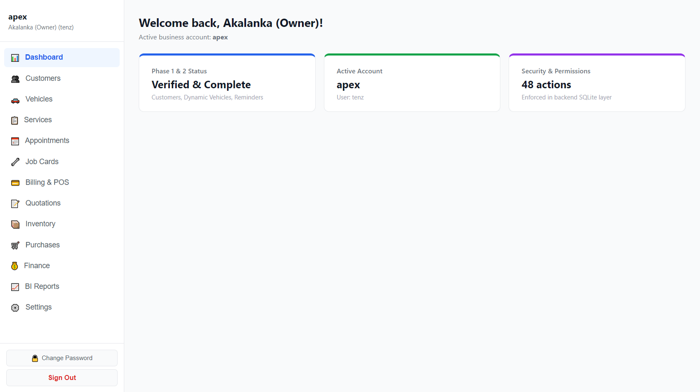
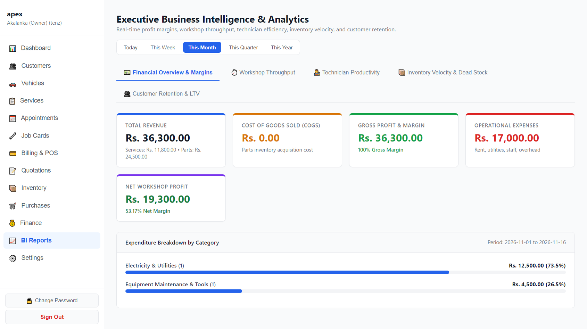

Figure 4.1: Live Vehicle Registry showing dynamic categories, vehicle photos, and service reminder hooks.
The system is an offline-capable, local-first Windows desktop application architected specifically for automotive workshops, repair garages, and enterprise vehicle fleets. It enforces strict separation of concerns across a two-process desktop paradigm:
| Layer | Technologies | Responsibility |
|---|---|---|
| Container Shell | Electron v33.2.0 | Window lifecycle, native menus, file system I/O, OS print spooling, and process sandboxing. |
| Backend Core | Node.js 20 + TypeScript | Business logic services, transaction wrappers, bcrypt password hashing, and IPC controllers. |
| Database Layer | better-sqlite3 v11.7.0 | High-speed embedded SQLite with Write-Ahead Logging (WAL) and strict foreign key integrity. |
| Frontend UI | React 19 + TypeScript + Vite | Reactive single-page application (SPA), modal managers, Canvas image downscalers, and responsive CSS. |
| Validation Engine | Zod v3.24.1 | Runtime schema validation across IPC contracts and user form submissions. |

The repository follows a domain-driven structure cleanly isolating backend, bridge, frontend, and shared contracts:
bi/
├── electron-builder.yml # Packaging configuration for portable .exe and NSIS setup
├── electron.vite.config.ts # Vite build configuration for main, preload, and renderer
├── package.json # Script commands, dependencies, and build metadata
├── tsconfig.json # Base TypeScript compiler settings
│
├── data/ # Application runtime databases
│ ├── master.db # Central registry of businesses and database paths
│ └── databases/ # Individual business databases (biz_<uuid>.db)
│ └── backups/ # Hot backups and pre-restore safety snapshots
│
├── dist/ # Production distribution binaries
│ ├── Vehicle Service Center 0.1.0.exe # Standalone portable Windows executable
│ └── Vehicle Service Center Setup 0.1.0.exe # Windows NSIS Setup installer
│
├── docs/ # Technical documentation and visual user manuals
│ ├── DEVELOPER_GUIDE.md # Architecture and codebase modification manual
│ ├── USER_MANUAL.md # Full end-user operational guide
│ └── screenshots/ # Application screen captures for documentation
│
└── src/ # Application Source Code
├── main/ # Node.js Electron Main Process
│ ├── database/ # Database connection and migration runner
│ │ ├── connection.ts # DatabaseManager singleton, WAL mode, foreign keys
│ │ ├── master.repo.ts # Multi-tenant business registry repository
│ │ ├── migrator.ts # Migration runner applying SQL files sequentially
│ │ └── migrations/ # Numbered SQL migration files (001 through 008)
│ ├── ipc/ # Typed IPC controllers (Renderer -> Main)
│ ├── repositories/ # Direct SQLite Query Layer (better-sqlite3)
│ ├── services/ # Business logic, validation & transactions
│ └── utils/ # Backend utilities (crypto, logger, money formatting)
│
├── preload/ # Electron Preload Bridge
│ └── index.ts # contextBridge exposing safe window.api IPC calls
│
├── renderer/ # React Frontend (Chromium UI)
│ ├── App.tsx # Root layout, navigation router, active tab state
│ ├── components/ # Reusable UI widgets (Layout, Auth, Modals)
│ ├── modules/ # Domain-specific pages:
│ │ ├── appointments/ # Service bay booking schedule
│ │ ├── auth/ # Login, forgot password & security questions
│ │ ├── bi/ # Business Intelligence analytics & metrics
│ │ ├── billing/ # POS invoicing, payment collection, receipts
│ │ ├── catalogue/ # Services & dynamic vehicle categories
│ │ ├── customers/ # Customer directory & customer profiles
│ │ ├── finance/ # Cash drawer reconciliation & expense ledger
│ │ ├── inventory/ # Spare parts & append-only stock movements
│ │ ├── job-cards/ # Workshop Kanban, checklists, technician work
│ │ ├── purchases/ # Purchase orders & supplier directory
│ │ ├── quotations/ # Formal estimates & 1-click job card converter
│ │ ├── settings/ # Feature toggles, user accounts, backups, audit
│ │ └── vehicles/ # Vehicle registry & photo upload modal
│ └── styles/ # Global styling, responsive layout, modal styles
│
└── shared/ # Universal Types & Contracts (Main + Renderer)
├── constants/ # Permissions list, default sequences, status enums
├── types/ # TypeScript interfaces for all domain entities & IPC
└── validation/ # Zod validation schemas for forms and IPC requestsTo prevent regressions or data corruption, every developer modifying this repository must uphold these five fundamental principles:
$12.50 or Rs. 1,250.00 is stored as integer 125000. Tax rates are stored in basis points (15% = 1500). Raw floating-point arithmetic on currency is strictly prohibited.
inventory_items never stores a static quantity_on_hand column. Current stock is calculated dynamically using:
SELECT item_id, COALESCE(SUM(quantity), 0) as stock
FROM stock_movements
GROUP BY item_id;stock_movements.
DELETE. They are soft-deleted via is_active = 0. This guarantees historical job cards, invoices, receipts, and audit logs remain referentially valid forever.
data/databases/biz_<id>.db. Global metadata resides in data/master.db. When switching businesses, the active connection is closed and the new database is mounted with WAL mode and foreign key enforcement.
nodeIntegration: false and contextIsolation: true. Direct filesystem or database imports in React are forbidden. All communication flows through typed IPC channels exposed on window.api.
The SQLite database evolves through atomic, numbered SQL migrations managed by src/main/database/migrator.ts:
| Migration File | Domain Responsibility | Core Tables Created |
|---|---|---|
001_initial_schema.sql |
Users, Roles, Permissions, Sequences, Settings | users, roles, permissions, role_permissions, user_roles, settings, sequences |
002_customers_vehicles.sql |
Customer Directory & Dynamic Vehicle Registry | customers, vehicle_categories, vehicles, vehicle_reminders |
003_catalogue_inventory.sql |
Services, Spare Parts, Suppliers, Stock Movements | services, service_categories, inventory_items, units_of_measure, stock_movements, suppliers |
004_job_cards.sql |
Workshop Job Cards, Checklists, Labor & Parts | job_cards, job_card_services, job_card_parts |
005_invoicing.sql |
Invoices, Items, Payments, Counter POS | invoices, invoice_items, payments |
006_appointments_quotations.sql |
Bay Scheduling & Formal Estimates | appointments, quotations, quotation_items |
007_expenses_finance.sql |
Operating Expenses & BI Analytics | expense_categories, expenses, cash_drawer_sessions |
008_account_recovery.sql |
Security Questions & Zero-Loss Recovery | Extends users with security_question, security_answer_hash, recovery_pin_hash |
All client-server interaction inside Electron is structured as a unidirectional asynchronous contract:
await window.api.vehicles.create(input)src/preload/index.ts)ipcRenderer.invoke('vehicles:create', input)src/main/ipc/vehicles.ipc.ts)src/main/services/vehicles.service.ts)src/main/repositories/vehicles.repo.ts)better-sqlite3)data/databases/biz_<id>.db)

src/main/database/migrations/009_your_feature_name.sql.CREATE TABLE IF NOT EXISTS or ALTER TABLE ... ADD COLUMN ...).Migrator.runMigrations() automatically detects and applies it inside an atomic transaction.src/shared/types/<domain>.types.ts.src/shared/validation/<domain>.validation.ts.src/main/repositories/<domain>.repo.ts.src/main/services/<domain>.service.ts.src/main/ipc/<domain>.ipc.ts via registerIpcHandler().api.<domain> in src/preload/index.ts.Photos are downscaled using an HTML5 canvas before IPC transfer to keep database size optimal and fast:
// Downscales images to max 800px at 80% JPEG quality
const canvas = document.createElement('canvas');
let { width, height } = img;
if (width > 800 || height > 800) {
if (width > height) {
height = Math.round((height * 800) / width);
width = 800;
} else {
width = Math.round((width * 800) / height);
height = 800;
}
}
canvas.width = width;
canvas.height = height;
const ctx = canvas.getContext('2d');
ctx.drawImage(img, 0, 0, width, height);
const compressedDataUrl = canvas.toDataURL('image/jpeg', 0.8);
The codebase includes 24 Vitest suites covering 105 unit and integration tests executed in the Electron Node runtime:
# Run complete test suite
npm test
# Run tests in continuous watch mode
npm run test:watchIf upgrading Electron or Node.js versions, recompile native SQLite bindings using:
npx @electron/rebuild -f -w better-sqlite3# 1. Typecheck and lint
npm run typecheck
npm run lint
# 2. Compile Vite production SSR and React bundles
npm run build
# 3. Package Windows standalone portable executable and NSIS setup installer
npx electron-builder --winRelease outputs in dist/:
dist/Vehicle Service Center 0.1.0.exe — Zero-install portable standalone application.dist/Vehicle Service Center Setup 0.1.0.exe — Standard Windows installer wizard.